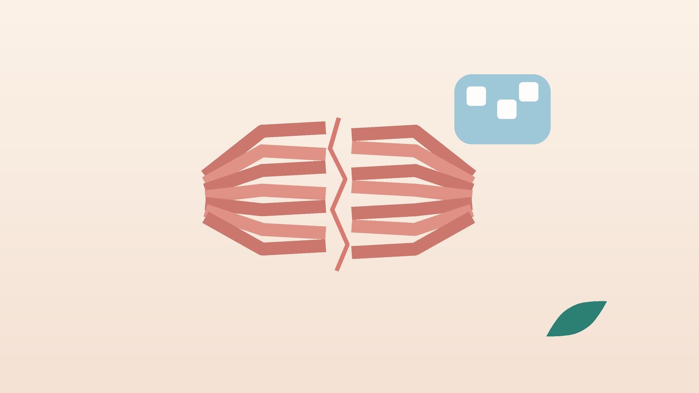

건강 칼럼 · 무릎·발·관절 · 인천 근육 파열 한의원
운동하다 종아리·허벅지가 뚝 했다면, 근육 파열 한방 치료

혹시 근육이 찢어진 걸까요?
- 운동 중 종아리나 허벅지 뒤에서 '뚝' 하거나 돌에 맞은 듯한 느낌이 났다
- 다친 뒤 절뚝거리며 걷고, 다리를 펴거나 까치발을 들면 아프다
- 하루 이틀 지나 아픈 자리 아래쪽으로 멍이 내려왔다
- 손가락으로 누르면 한 점이 유난히 아프고 움푹한 느낌이 있다
- 준비 운동 없이 갑자기 전력으로 뛰거나 공을 찼다
- 같은 자리를 예전에도 다친 적이 있다
이 체크리스트는 진단 도구가 아닙니다. 걷기가 거의 안 되거나 붓기가 빠르게 심해지면 바로 영상 검사를 받으세요.
응급실·정형외과가 먼저인 신호
- 발끝으로 서지 못함: 발뒤꿈치 위에서 '뚝' 소리가 난 뒤 까치발이 안 되면 아킬레스힘줄 파열을 의심해 정형외과에서 바로 확인하세요.
- 한쪽 종아리가 붓고 뜨겁고 아픔: 다친 기억이 뚜렷하지 않은데 이런 증상이 이어지면 다리 깊은 정맥의 혈전일 수 있습니다. 숨이 차거나 가슴이 아프면 119에 연락하세요.
- 터질 듯한 붓기와 저림: 통증이 진통제로도 줄지 않고 발이 저리거나 창백해지면 근육 안 압력이 높아지는 구획증후군일 수 있어 응급실로 가세요.
- 콜라색 소변: 무리한 운동 뒤 근육이 심하게 아프고 소변이 검붉게 나오면 근육이 녹는 횡문근융해증일 수 있으니 응급실에서 검사받으세요.
- 엉덩이 아래 큰 멍과 힘 빠짐: 허벅지 뒤 힘줄이 뼈에서 떨어진 경우로, 수술 여부를 정형외과에서 빨리 판단해야 합니다.
근육은 어떤 순간에 찢어질까요?
근육이 길게 늘어나면서 동시에 수축하는 순간(브레이크를 거는 동작)에 가장 큰 힘이 걸립니다. 그래서 질주하다 발을 앞으로 뻗을 때 햄스트링이, 테니스나 배드민턴에서 갑자기 앞으로 박차고 나갈 때 종아리 안쪽 장딴지근이 잘 다칩니다.
- 1도: 근육 섬유 일부가 늘어나거나 미세하게 찢어진 상태로, 대개 걸을 수 있고 1~3주 안에 좋아지는 경우가 많습니다.
- 2도: 근육이 부분적으로 찢어져 힘이 빠지고 멍이 들며, 회복에 한두 달 걸리기도 합니다.
- 3도: 근육이나 힘줄이 완전히 끊어져 움푹 팬 자리가 만져지며, 수술을 검토하기도 합니다.
- 다시 다치는 이유: 통증이 사라졌다고 근력과 유연성이 돌아오기 전에 복귀하면 같은 자리가 또 찢어지기 쉽습니다.
한의학은 근육 파열을 어떻게 보나요?
한의학에서는 운동 중 근육이 상한 것을 근상(筋傷)으로 보고, 찢어진 자리에 피가 고여 붓고 멍든 상태를 어혈(瘀血)로 해석합니다. 『황제내경 소문』 선명오기편에는 '오래 걸으면 근을 상한다(久行傷筋)'는 말이 있고, 위론편에서는 간이 몸의 근막을 주관한다고 했습니다.
다친 직후에는 어혈과 열감을 풀고, 시간이 지나면 굳은 근육을 부드럽게 하며, 회복이 더디면 근을 기르는 기혈을 보태는 쪽으로 치료 방향을 바꿉니다.
나의 근육 손상은 어떤 단계일까?
큰 파열과 응급 상황이 배제된 뒤 회복 단계에 맞춰 나누는 한의학적 구분입니다.
1. 어혈열통(瘀血熱痛) 갓 다친 유형
- 이런 분에게 많아요
- 다친 지 3일 이내인 분
- 나타나는 모습
- 아픈 자리가 붓고 열감이 있으며 멍이 번진다
- 함께 오는 몸의 신호
- 움직일 때 찌르는 듯한 통증
- 진찰에서 보이는 모습
- 누르면 한 점이 뚜렷하게 아프고 따뜻함
- 치료 방향
- 고인 피를 흩고 열을 내리는 방향 (도홍사물탕 계열)
- 오늘부터 해 볼 것
- 다리를 쿠션 위에 올리고 붕대로 가볍게 감아 두세요.
2. 근급(筋急) 굳고 당기는 유형
- 이런 분에게 많아요
- 붓기는 빠졌지만 다리를 펴기 힘든 분
- 나타나는 모습
- 아침에 일어나 첫걸음이 뻣뻣하고 쥐가 잘 난다
- 함께 오는 몸의 신호
- 다친 근육 주변이 단단하게 뭉침
- 진찰에서 보이는 모습
- 근육 길이가 반대쪽보다 짧게 느껴짐
- 치료 방향
- 당긴 근육을 풀어 움직임을 되찾는 방향 (작약감초탕 계열)
- 오늘부터 해 볼 것
- 아프지 않은 범위에서 하루 몇 번씩 천천히 늘려 주세요.
3. 기혈허(氣血虛) 회복이 더딘 유형
- 이런 분에게 많아요
- 과로가 겹쳤거나 중년 이후 다친 분
- 나타나는 모습
- 몇 주가 지나도 힘이 안 들어가고 금방 지친다
- 함께 오는 몸의 신호
- 잠이 얕고 쉽게 피곤함
- 진찰에서 보이는 모습
- 맥이 약하고 근육이 물렁하게 만져짐
- 치료 방향
- 기혈을 보태 근육이 다시 차오르도록 돕는 방향 (팔진탕 계열)
- 오늘부터 해 볼 것
- 단백질 반찬을 끼니마다 챙기고 잠을 7시간 이상 자 주세요.
4. 반복손상(反復損傷) 같은 곳을 또 다친 유형
- 이런 분에게 많아요
- 축구·풋살·달리기를 꾸준히 하는 분
- 나타나는 모습
- 예전에 다친 자리 근처가 또 찢어진다
- 함께 오는 몸의 신호
- 운동 뒤 같은 자리가 늘 묵직함
- 진찰에서 보이는 모습
- 흉터처럼 단단한 결이 만져지고 유연성이 떨어짐
- 치료 방향
- 굳은 결을 풀고 골반·허리 정렬까지 함께 보는 방향
- 오늘부터 해 볼 것
- 운동 전 10분 몸을 데우고, 근력 운동을 주 2회 넣어 보세요.
한의원에서는 어떻게 진찰하나요?
- 다친 상황: 어떤 동작에서 다쳤는지, 소리나 감각이 있었는지, 그 뒤 걸을 수 있었는지 여쭙습니다.
- 근력·유연성 비교: 다리 들기, 까치발 들기, 무릎 굽히기를 양쪽 비교해 손상 근육과 정도를 가늠합니다.
- 초음파: 근육 섬유가 끊어진 길이와 깊이, 피가 고인 크기, 힘줄까지 다쳤는지를 실시간으로 봅니다.
- 영상 의뢰: 완전 파열이나 힘줄이 뼈에서 떨어진 소견이 보이면 정형외과 MRI를 권합니다.
침·약침·추나·한약 치료는 어떻게 하나요?
1. 침 치료
- 승산(承山): 종아리 뒤 한가운데, 근육 두 갈래가 갈라지며 오목해지는 자리로 종아리 손상에 씁니다.
- 위중(委中): 무릎 뒤 오금 주름의 가운데로, 다리 뒤쪽 근육이 당길 때 씁니다.
- 은문(殷門): 허벅지 뒤 한가운데 근육이 두툼한 자리로 햄스트링 손상에 씁니다.
- 양릉천(陽陵泉): 무릎 바깥 아래 종아리뼈 머리 앞쪽 오목한 곳으로, 근육과 힘줄을 다스릴 때 고릅니다.
갓 다쳤을 때는 아픈 자리를 직접 자극하기보다 주변과 먼 자리를 골라 붓기를 덜고, 열감이 가라앉은 뒤에는 굳은 근육에 온열 요법을 시행합니다.
2. 약침·초음파 가이드 약침과 추나 요법
약침은 일반 약침과 초음파 가이드 약침을 모두 시행하며, 손상 깊이와 위치에 따라 진찰 후 골라 씁니다. 초음파로 근육이 찢어진 범위와 피 고임(혈종), 힘줄 손상 여부를 확인하며 바늘 끝이 손상 부위 가장자리에 닿도록 놓습니다. 한쪽 다리를 감싸 걷느라 골반과 허리, 발목 정렬이 틀어졌다면 진찰 후 추나 요법을 시행합니다.
3. 한약
다친 초기에는 어혈과 붓기를 푸는 쪽, 회복기에는 근육을 기르고 피로를 덜어 주는 쪽으로 탕약을 처방합니다. 혈액을 묽게 하는 약처럼 드시는 약은 알려 주시면 확인해 처방합니다. 임신 중이거나 간 질환, 출혈 질환 병력이 있다면 진료 때 꼭 알려 주세요. 확인 후 안전한 약재로 처방합니다. 한약은 원장이 원내 탕전실에서 약재 선별부터 달이는 과정까지 직접 관리하며, 10일분씩 처방해 복용 경과를 보고 약재 구성과 양을 조절합니다. 아픈 자리는 초음파 가이드 약침과 추나로 다스리고, 통증이 오래가게 만드는 몸속의 기혈 순환과 장부 기능은 체질에 맞춘 한약으로 함께 살피면 통증 완화와 재발 관리를 함께 도모할 수 있습니다.
원장님이 네이버 블로그에 진료 이야기와 건강 정보를 꾸준히 올리고 있습니다. 더 많은 이야기는 블로그에서 확인해 보세요.
블로그 보기운동 복귀까지는 어떤 순서로 가나요?
- 보호기 처음 1~3일은 아픈 동작을 피하고, 다리를 높이 두며 붕대로 가볍게 압박합니다.
- 움직임 되찾기 통증이 참을 만하면 걷기와 가벼운 늘리기로 근육이 굳지 않게 합니다.
- 근력 회복 까치발 들기, 엉덩이 들기 같은 운동으로 다친 근육에 부하를 조금씩 올립니다.
- 복귀 준비 가벼운 조깅에서 빠른 달리기, 방향 전환 순으로 넘어가고 양쪽 근력이 비슷해지면 경기에 돌아갑니다.
회복 기간은 손상 정도와 나이, 운동 종목에 따라 크게 다르며, 진찰과 초음파 결과를 보고 개인별로 안내합니다.
다친 뒤 집에서 지킬 생활 관리
- 처음 며칠: 아픈 동작은 쉬고 다리를 심장보다 높이 둡니다. 얼음찜질은 통증이 심할 때 15분 정도만 짧게 쓰세요.
- 소염진통제: 다친 직후 며칠은 습관처럼 먹기보다 꼭 필요할 때만 쓰는 편이 회복에 낫다는 의견이 있습니다.
- 너무 오래 쉬지 않기: 통증이 줄면 바로 아프지 않은 범위의 걷기를 시작해 혈액순환을 도와주세요.
- 근력 운동: 햄스트링은 엎드려 무릎 굽히기, 종아리는 벽 잡고 까치발 들기를 15번씩 해 봅니다.
- 예방 습관: 운동 전 5~10분 가볍게 뛰며 몸을 데우고, 피곤한 날 전력 질주는 피하세요.
다른 진료가 함께 필요한 경우
- 근육이나 힘줄이 완전히 끊어졌으면 정형외과에서 수술이 필요한지 판단받으세요.
- 혈전 위험이 있는 분(최근 수술, 오래 누워 지냄, 호르몬제 복용)은 종아리 붓기를 가볍게 넘기지 마세요.
자주 묻는 질문 Q&A
- Q1. 근육 파열과 근육 뭉침은 어떻게 구별하나요?
- 뭉침은 쉬면 대개 하루 이틀 안에 풀리지만, 파열은 다친 순간이 또렷하고 멍이 들며 힘이 빠지는 경우가 많습니다.
- Q2. 멍이 다친 자리보다 아래로 내려왔어요. 괜찮은가요?
- 고인 피가 아래로 번지는 흔한 모습이지만, 붓기가 계속 심해지면 진료를 받으세요.
- Q3. 다친 다리에는 얼음과 온찜질 중 무엇이 맞나요?
- 갓 다쳐 열감이 있을 때는 짧게 차갑게, 붓기와 열감이 빠진 뒤에는 따뜻하게 하는 편이 좋습니다.
- Q4. 얼마나 지나야 다시 뛸 수 있나요?
- 통증 없이 빨리 걷고 양쪽 근력이 비슷해졌는지를 보고 정합니다.
- Q5. 햄스트링은 왜 자꾸 다시 다치나요?
- 근력과 유연성이 돌아오기 전에 복귀하는 경우가 많기 때문입니다. 노르딕 햄스트링 운동처럼 근육을 늘리며 버티는 운동이 예방에 도움이 된다는 연구가 있습니다.
- Q6. 압박 스타킹이나 테이핑이 도움이 되나요?
- 보조 수단으로는 쓸 수 있지만 근력 운동을 대신하지는 못합니다.
- Q7. 초음파 검사는 꼭 해야 하나요?
- 찢어진 범위와 피 고임을 눈으로 확인할 수 있어 회복 기간을 가늠하고 치료 자리를 정하는 데 도움이 됩니다.
- Q8. 집에서 눌러 줄 혈자리가 있나요?
- 회복기에는 종아리 뒤 가운데 승산혈 주변을 엄지로 부드럽게 눌러 주세요. 갓 다쳐 붓고 뜨거운 자리는 누르지 마세요.
문원열 대표원장한의사 · 365스마일한의원
임상 경력 15년, 인천 서구 가정동에서 개원 후 10년째 진료하고 있으며, FCST 턱관절학회·연부조직학회·침도학회 등에서 활동합니다. 아픈 곳만이 아니라 증상의 원인을 찾아 진료합니다.
진료 안내
- 진료시간
- 평일 09:00~20:00 (점심시간 13:00~14:00, 접수 마감 19:30)
토·일·공휴일 09:00~15:00 (접수 마감 14:30) - 주소
- 인천광역시 서구 가경주로 46, 2층 (가정동)
인천2호선 가정중앙시장역 인근
영상으로 길 안내 보기 → - 주차
- 한의원 건물 바로 앞 1층 도원주차장
- 예약
- 예약 바로가기 또는 전화 예약
진료시간은 사정에 따라 바뀔 수 있으니 방문 전 전화로 확인해 주세요.
함께 읽으면 좋은 칼럼
건강 칼럼 전체 보기 →
참고 자료
- Dubois B, Esculier JF. Soft-tissue injuries simply need PEACE and LOVE. Br J Sports Med, 2020
- Mueller-Wohlfahrt HW, et al. Terminology and classification of muscle injuries in sport: the Munich consensus statement. Br J Sports Med, 2013
- 『황제내경 소문(素問)』 선명오기(宣明五氣), 위론(痿論)
- 질병관리청 국가건강정보포털 — 원문
※ 이 글은 일반적인 건강 정보이며, 개인의 상태에 따라 치료 방법과 결과는 다를 수 있습니다. 정확한 진단과 치료는 진료를 통해 결정됩니다. 침·약침 시술 후 드물게 멍, 통증 등이 생길 수 있습니다.